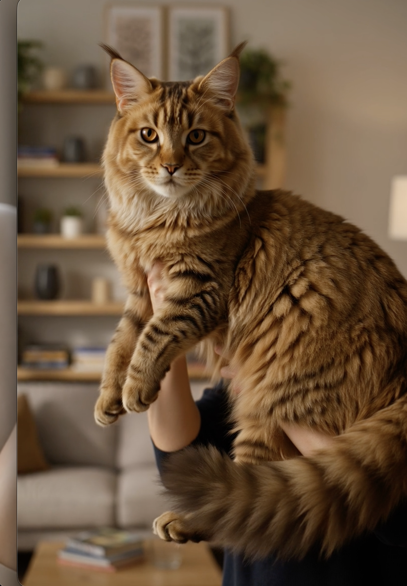
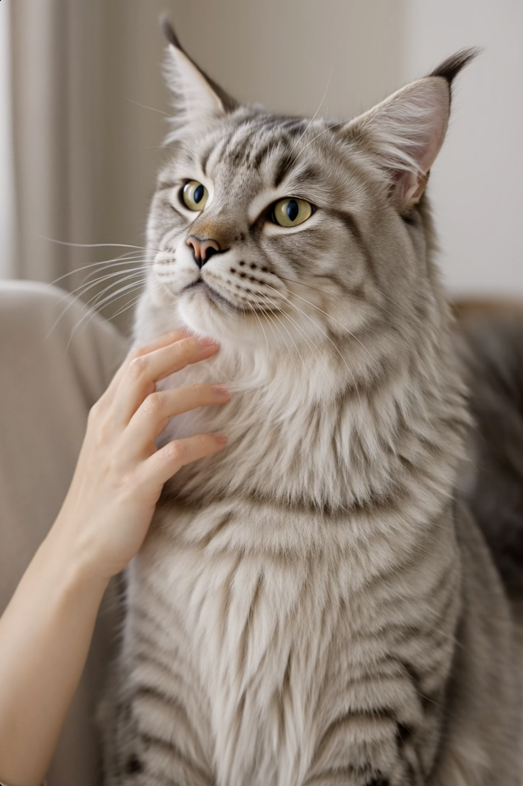
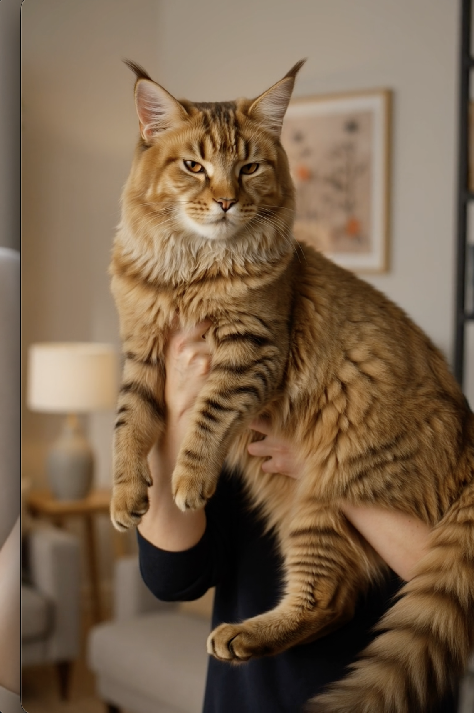

Biggest Cats, Smallest Cats + DIY Toys & Climbers
This article may contain affiliate links. If you make a purchase through these links, we may earn a small commission at no extra cost to you.
Cats come in some incredible extremes. One cat can look like a tiny forever-kitten, while another looks like a miniature lynx who somehow pays rent. That size range is part of what makes cats so fascinating, and it changes more than appearance. It shapes how people imagine temperament, grooming, toys, and home setup.
This guide keeps the focus simple: the biggest cats people love, the smallest cats people ask about, and practical DIY toys and climbers that help indoor cats stay active without turning your home into chaos.
The best cat setup is not about buying the most expensive gear. It is about giving the cat enough movement, novelty, and safe places to climb, observe, and play.
What this guide covers: big cats, small cats, simple DIY enrichment, safe laser play, common toy mistakes, and practical ideas that fit everyday cat homes.
A Quick Tour Through Cat Greatness




The Biggest Domestic Cat: Maine Coon
If you ask people to picture the “big cat” of house-cat life, the Maine Coon usually wins immediately. They are known for their size, ear tufts, long tails, heavy coats, and calm but confident presence. They often look wild at first glance, but many owners describe them as gentle, social, and surprisingly easy to live with for such a dramatic-looking cat.
What makes them stand out is not just the body size. It is the mix of size and softness. Many Maine Coons seem huge without feeling chaotic. They often have a steady, observant way of moving through the home, which is part of why people call them gentle giants.
Maine Coons are admired for their size, facial detail, and that unmistakable “wild but gentle” look.
Their coats need regular attention, and their size means scratching posts, climbers, and sleeping spots should feel sturdy rather than decorative. If someone loves big, affectionate cats, the Maine Coon is usually the first breed that explains why.
The Smallest Cat: Singapura
On the opposite side sits the Singapura, one of the smallest recognized cat breeds. These cats often look compact, bright-eyed, and delicate, but the personality is not small at all. Singapuras are usually described as alert, curious, social, and very tuned in to whatever their people are doing.
That contrast is what makes them special: tiny frame, big curiosity. People often love the almost kitten-like look, but the key point is that “small” does not mean inactive or fragile in temperament. Small cats still need climbing, play, and daily mental stimulation.

The smallest cats still need a rich indoor life. Tiny size does not reduce the need for movement or curiosity.
DIY Cat Toys and Cat Climbers
The best cat toys are often the ones that create motion, texture, and novelty without becoming dangerous clutter. Many cats care less about price and more about whether the object moves, rustles, rolls, or leads them into stalking behavior.
Good DIY toys also need an ending. The toy should feel satisfying to catch, push, or explore. If it is frustrating, flimsy, or too easy to swallow, it is not good enrichment. This is especially important with strings, feathers, and laser pointers.
Simple DIY climbers
A sturdy stool near a window, a secure box tower, or a short shelf route can create more value than random toy piles. Cats love vertical choices because climbing supports observation, confidence, rest, and quiet territory.
DIY balls and chase toys
Paper balls, cardboard tubes, folded paper strips, and felt toys can work extremely well. The key is safety: avoid small pieces that shred easily, strings left unattended, or anything your cat might swallow.
Safe laser tips
Laser play can be fun, but it should always end with a catch. If the cat chases something forever and never gets the satisfaction of a toy, treat, or physical object at the end, the session can become frustrating instead of enriching.
Safe rule: if you use a laser, finish the play session by directing the cat toward a real toy or treat so the hunt has a clear ending.

A sturdy climber or vertical route often does more for daily enrichment than another throwaway novelty toy.
The best DIY toys invite stalking, pouncing, batting, and climbing without making the environment unsafe.
Why This Matters for Indoor Cats
Indoor cats often look relaxed, but they still carry strong hunting and exploration instincts. That is why size, toys, and climbing matter in the same conversation. Whether the cat is huge like a Maine Coon or tiny like a Singapura, the home still needs movement, observation points, and satisfying play.
Simple truth: a cat with better enrichment usually shows fewer stress behaviors and more satisfying play, rest, and confidence.
If you want to go deeper on cat routine and comfort, see Understanding Your Cat, Cat Nutrition Basics, and The 5 Most Domesticated Cat Breeds.
Common Mistakes
Most cat-enrichment mistakes are not dramatic. They are small mismatches that add up over time.
Big pattern: many toy and enrichment problems start when people buy or build for aesthetics instead of actual cat behavior.
- Buying tiny climbers for large cats that need real stability
- Assuming a small cat needs less enrichment than a large one
- Using lasers without a real toy “catch” at the end
- Leaving unsafe strings or shreddable pieces out unattended
- Ignoring vertical space because the floor already has toys
- Choosing cute toys that do not move, roll, bounce, or invite stalking
Checklist
- Do you know whether your cat is better matched to floor play or climbing play?
- Is your climber stable enough for your cat’s size?
- Do your toys create stalking, batting, chasing, or climbing, not just visual clutter?
- Do you rotate toys instead of leaving everything out all the time?
- Do laser sessions end with a physical reward or real toy?
- Do you have at least one vertical area and one quiet resting area?
Watch This Topic in Video
Prefer a visual companion to this topic? Cat routines and play behavior make more sense when you can watch movement and body language in action.
More Reading
These posts pair naturally with this guide:
- Understanding Your Cat — body language, bonding, and routine
- Cat Nutrition Basics — food, hydration, and feeding habits
- The 5 Most Domesticated Cat Breeds — personality, origin, and home fit
- Choosing the Right Food for Your Pet — label-reading and practical nutrition basics
Final Thought
The fun of cats is not only who they are. It is how different they can be. One cat may look enormous and regal. Another may look tiny and quick. Both still need the same core things: safe play, stable climbing, and a home that respects what cats naturally want to do.
Once the basics are right, cats usually show you the rest. They climb more confidently, play more naturally, rest more deeply, and bring a lot more personality into the room.